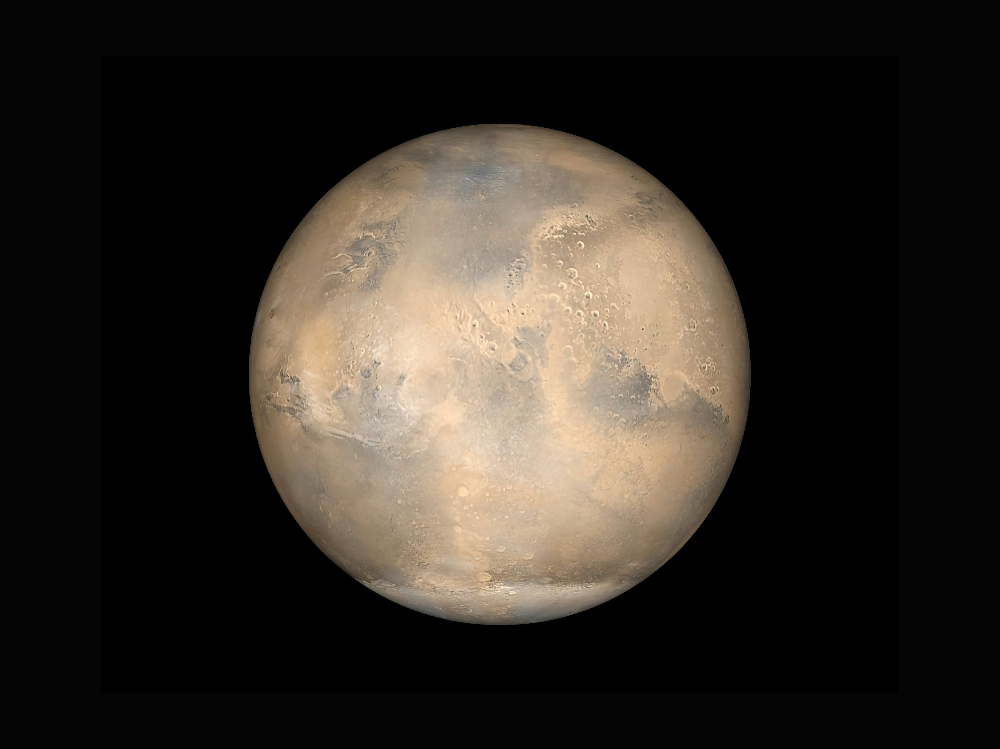

| Property | Value |
|---|---|
| Name | Mercury (Messenger of the Gods) |
| Planetary Type | Terrestrial (rocky) planet |
| Age | ~4.5 billion years (formed with Solar System) |
| Location | Inner Solar System, 1st planet from Sun |
| Distance from Sun | 46.0 million km (perihelion) – 69.8 million km (aphelion) |
| Average Distance | 57.9 million km (0.387 AU) |
| Diameter | 4,879.4 km (38% of Earth's) |
| Mass | 3.301 × 10²³ kg (5.5% of Earth's) |
| Volume | 6.083 × 10¹⁰ km³ (5.4% of Earth's) |
| Density (average) | 5.427 g/cm³ (second densest planet after Earth) |
| Surface Area | 74.8 million km² (10% of Earth's) |
| Apparent Magnitude | -2.6 to +5.7 |
Mercury's enormous core relative to its mantle (60% of planet vs. Earth's 15%) suggests a violent youth :
| Component | Percentage |
|---|---|
| Iron (core) | ~60-70% |
| Silicate mantle | ~25-30% |
| Crust | ~3-5% |
| Element/Compound | Abundance |
|---|---|
| Oxygen (O) | Major constituent in silicates |
| Silicon (Si) | ~15-20% (in silicates) |
| Magnesium (Mg) | ~10-15% |
| Sulfur (S) | 2-4% (much higher than Earth) |
| Iron (Fe) | Low in surface rocks (~2-3%) |
| Aluminum (Al) | ~5-7% |
| Calcium (Ca) | ~4-6% |
| Sodium (Na) | ~2-3% |
| Potassium (K) | ~0.1% |
Isotopic Composition: Similar to Earth and other inner planets, suggesting common origin; slight differences indicate distinct formation history.
From Core to Surface
Size comparison: Core volume 60% (Earth 15%), mantle ~35%, crust ~5%.
| Source | Contribution |
|---|---|
| Primordial heat | From formation and differentiation |
| Radiogenic heating | Decay of radioactive elements (K, U, Th) |
| Tidal heating | Minor from Sun's gravity |
| Core cooling | Contraction as core solidifies |
Heat Flow: Surface heat flow ~0.03 W/m² (much lower than Earth); total heat loss ~2×10¹¹ W; core cooling rate causes planet to shrink.
Planetary Shrinkage: Total contraction ~7-10 km radius over 4.5 Gyr; still active, creating scarps.
| Location | Temperature (K) | Temperature (°C) |
|---|---|---|
| Dayside (equator) | Up to 700 K | 427°C |
| Nightside | Down to 100 K | -173°C |
| Poles (permanent shadow) | ~50-100 K | -223°C to -173°C |
| Average surface | ~440 K | 167°C |
Largest range in Solar System ~600 K; no atmosphere; slow rotation; polar cold traps.
Atmospheric: surface pressure ~10⁻¹² to 10⁻¹⁴ bar (near vacuum).
Internal pressure:
| Depth | Pressure (GPa) |
|---|---|
| Base of crust | ~0.5-1 GPa |
| Mantle base | ~5-10 GPa |
| Core boundary | ~20-30 GPa |
| Center | ~40 GPa |
| Layer | Density (g/cm³) |
|---|---|
| Surface (average) | 2.7-3.0 |
| Crust base | ~3.0-3.1 |
| Mantle (upper) | ~3.2-3.3 |
| Mantle (lower) | ~3.3-3.5 |
| Core (outer) | ~7-9 |
| Core (inner) | ~10-13 |
| Planet average | 5.427 |
Major Terrain Types: Intercrater Plains, Smooth Plains, Cratered Terrain, Hollows, Lobate Scarps, Secondary Craters.
Geologic Timeline: Pre-Tolstojan (4.5-3.9 Ga), Tolstojan (3.9-3.8), Calorian (3.8-3.5), Mansurian (3.5-1.0), Kuiperian (1.0–present).
Major basins: Caloris (1550 km), Tolstoj (~400 km), Rembrandt (~715 km).
Strength ~1% of Earth's (200-400 nT); global dipole offset; active dynamo. Magnetosphere small, reconnection events frequent.
Composition: O, Na, H, He, K, Ca, water vapor. Total mass ~1,000 kg. Formed by sputtering, vaporization, outgassing, solar wind capture.
Orbital period: 87.969 d; eccentricity 0.2056; rotation period 58.646 d; solar day 176 d. 3:2 spin-orbit resonance. Perihelion precession confirms General Relativity.
Distance from galactic center: ~26,660 ly; Orion Arm. Sagittarius A* event horizon ~21% of Mercury's orbital diameter (coincidence).
Technically no weather, but sodium tail, exospheric variations, 600°C swings. No seasons (tiny axial tilt) but eccentricity creates 'hot poles'.
Thickness meters to tens of meters; composition: silicate fragments, impact glass, sulfur minerals, graphite. Polar regolith contains water ice.
Total ice mass 10¹⁴–10¹⁵ kg in permanently shadowed craters. Origins: comets, outgassing, solar wind. Organic layer detected. Important for Earth's water origin.
No life on Mercury. Astrobiological significance: volatile delivery, preservation in extreme environments, exoplanet analogs.
Albedo 0.1-0.2; grayish. Thermal emission peaks 5-20 µm. Exospheric emissions: Na, K, Ca. Magnetospheric: X-ray fluorescence, auroral-like UV.
Surface gravity 3.7 m/s²; escape velocity 4.25 km/s. Effects: jump 2.6× higher, no atmosphere retention.
NOT a candidate (mass too small). Schwarzschild radius ~0.5 mm. If artificially compressed, same gravity, disappears.
Past: giant impact, heavy bombardment, volcanism. Current: tectonically active (scarps). Future: engulfed by Sun in ~7.5 Gyr.
Fails all star criteria: no fusion, mass 0.00017 solar masses, not self-luminous.
State: solid/liquid core, solid mantle, solid crust. Quantum effects: electron transitions (spectral lines), blackbody radiation, photoemission. From quarks to planet via nucleosynthesis.
Mass: 3.3×10²³ kg = 330 trillion tons; surface area 74.8 million km²; atoms ~10⁴⁹. Walking equator: 100 days at 5 km/d; fall to center ~30 min.
| Aspect | Summary |
|---|---|
| Identity | Innermost planet, terrestrial, iron-rich |
| Age | ~4.5 billion years |
| Composition | 60-70% iron core, 30% silicate mantle |
| Core size | ~60% of planet volume |
| Temperature | -173°C to +427°C |
| Atmosphere | Exosphere only (10⁻¹² bar) |
| Magnetic field | Weak but active dynamo |
| Rotation | 3:2 spin-orbit resonance |
| Surface features | Craters, plains, scarps, hollows |
| Water ice | Yes, at poles |
| Life? | No (extreme conditions) |
| Black hole? | No |
| Future | Engulfed by Sun in 7+ Gyr |
| Significance | Key to terrestrial planet formation |